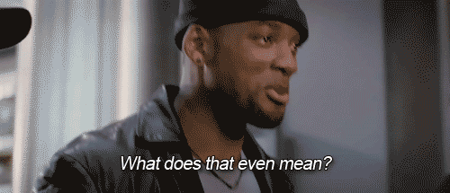

First
I done did make a blog Ethel.
Do What?
More specifically a blog primarily about technical things with the occasional life, home brew, and random thought posts.
Why?
- To have an area where I can share my thoughts.
- My rubber ducky could use a digital home.
- To potentially receive feedback and thus growth.
- The seemingly egotistical emphasis of my own projects.
- To become a better writer.
- Because I can.
In Conclusion

I'm not sure but lets find out, shall we.